A bit more on grouping exposures
Exposure metrics
Look at variance within and between groups
One summary measure is referred to as contrast (ability to create groups with different exposures)
Contrast
\[ \epsilon = \frac{_{BG}S^{2}_{y}}{(_{BG}S^{2}_{y}+_{WG}S^{2}_{y})} \]
Grouping affects standard error of exposure-response slope very adversely if low contrast between groups
So, grouping schemes must be optimized
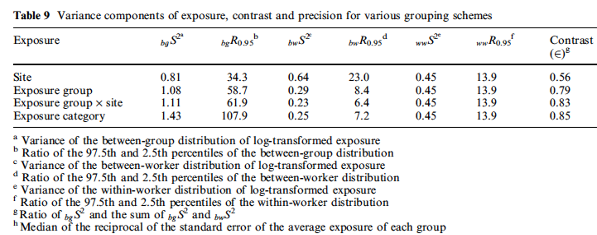
Niewenheijsen, 1997
Large-scale grouping strategy
Essentially a giant table with 3 axes
Agent
Exposure
Time
Often used in large population-based studies
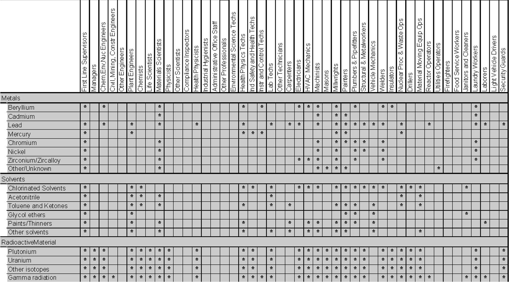
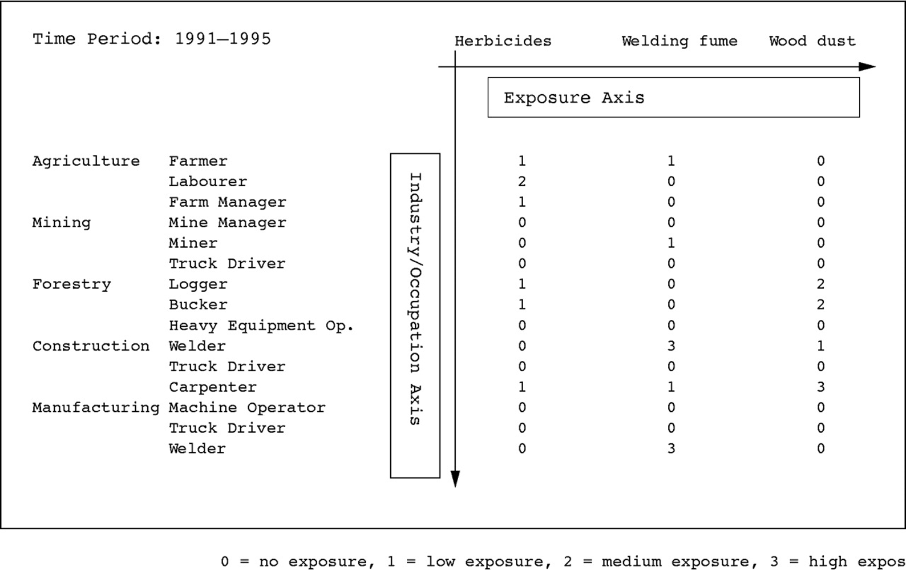
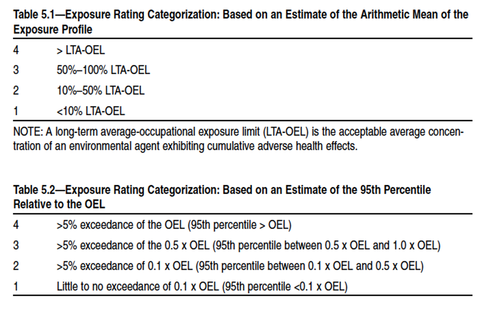
AIHA, Strategy for Assessing and Managing Occupational Exposures, 3rd ed, 2006
How many categories are there in PrimaryTaskShift variable?
Is this manageable? If not, consider collapsing into fewer categories, as long as you have good rationale
Combine tasks with similar central tendency and distributions
Combine tasks that seem similar
How we quantify/define exposure
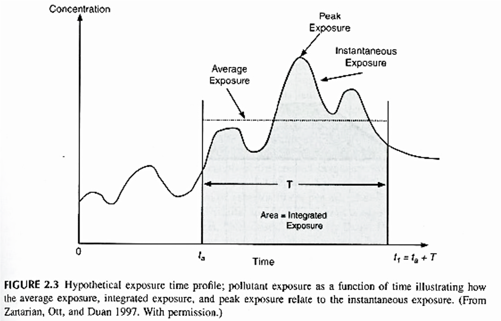
WR Ott, AC Steinemann, LA Wallace, 2007
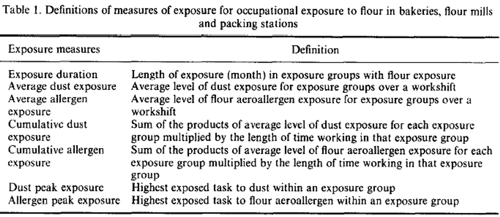
Nieuwenhuijsen, Lowson, Venables, Newman Taylor, 1995
Average exposure
\(L_{Aeq,T} = 10\cdot\text{log}[\frac{1}{T}\sum\limits_{i=1}^{N}t_i\cdot10^{L_{Ai}/10}]\)
Where
\(T\) is total duration
\(t_i\) is an interval within duration
\(N\) is total number of intervals
\(L_A\) is A-weighted noise level
Note: this is the level in the WorkLEQdBA variable
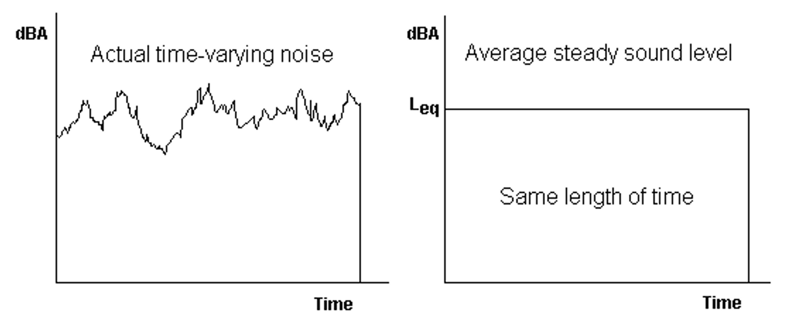
Chapter 3, AIHA Noise Manual, 2022
TWA normalizes measurements to a standard exposure (typically 8 hours)
\[ L_{A8hn} = 10 \cdot \text{log}[\frac{1}{8}\int_0^T 10^{L_A(t)/10}dt] = L_{Aeq,T} + 10 \cdot \text{log}(\frac{T}{8}) \]
Where
\(L_{A8hn}\) = 8-hour equivalent exposure
\(T\) is duration of exposure (in hours)
Note: you have duration of exposure in minutes
Chapter 3, AIHA Noise Manual, 2022
Allows for direct comparison of exposures measured over different periods
For example:
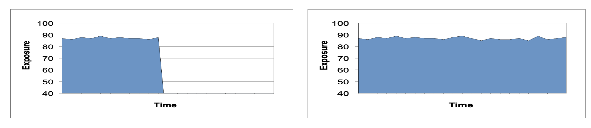
Both of these exposures have the same LEQ average
However, TWA for right-hand exposure would be 2X as high, since monitoring duration is 2X as long
Ratio of peak or maximum to average?
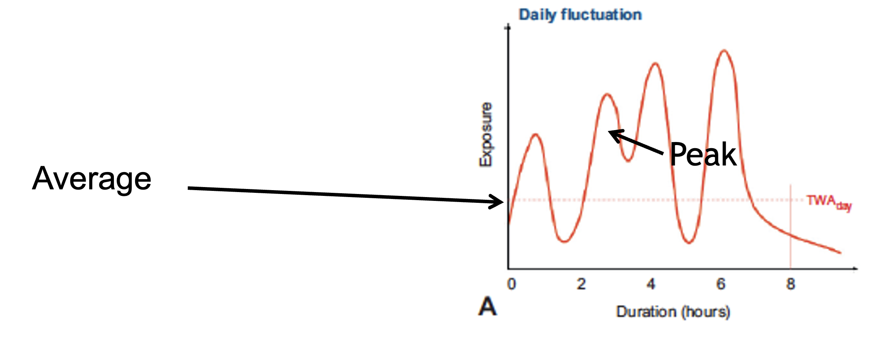
Moretto A, Handbook Clin Neurol, 2015
Ratio exposure (peakiness)
\[ \text{Ratio of }L_{MAX}/L_{EQ} = \frac{L_{MAX(\text{in dBA})}}{L_{EQ(\text{in dBA})}} \]
Provides summary of highest exposure during measurement to average exposure during measurement
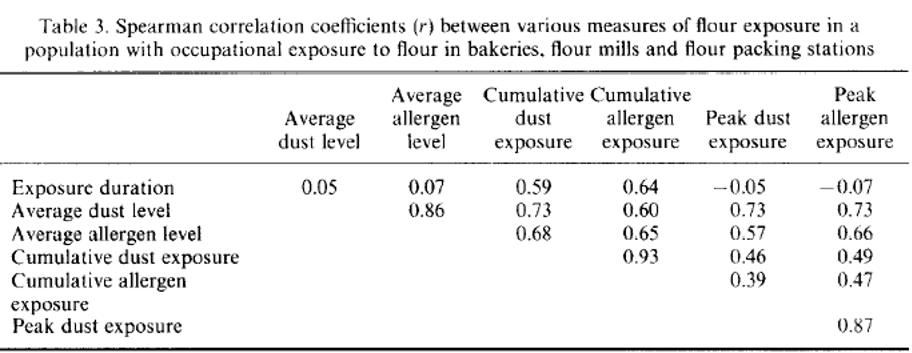
Nieuwenhuijsen, Lowson, Venables, Newman Taylor, 1995
Created composite index of exposure
Also allows for assessment of correlations between combinations of exposures
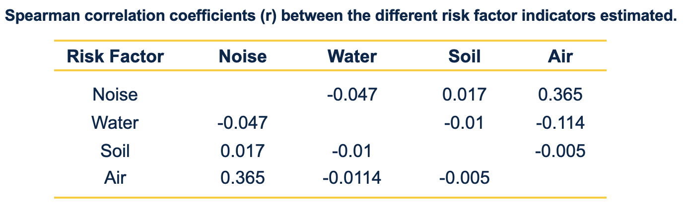
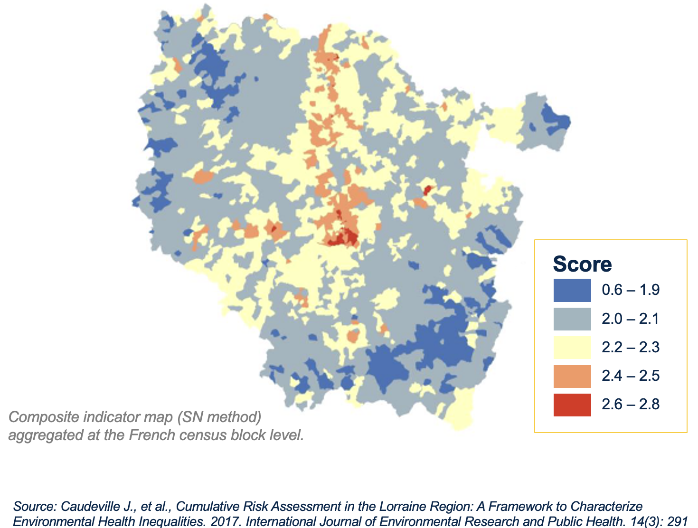
Question: do we want these to be highly or poorly correlated?
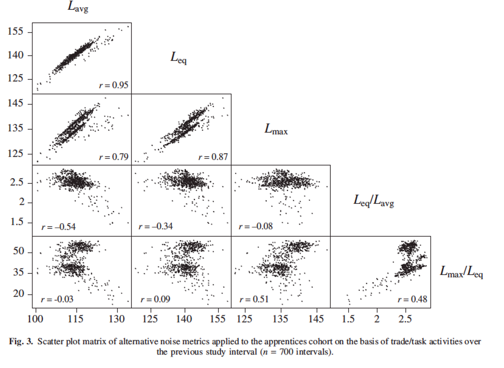
Seixas, Neitzel, Sheppard, Goldman, 2004
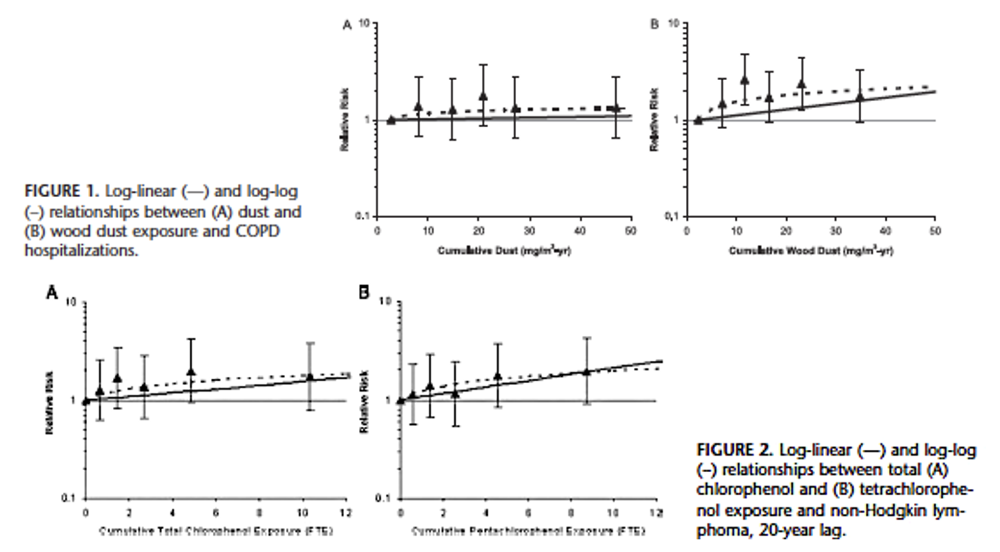
Friesen et al, 2007
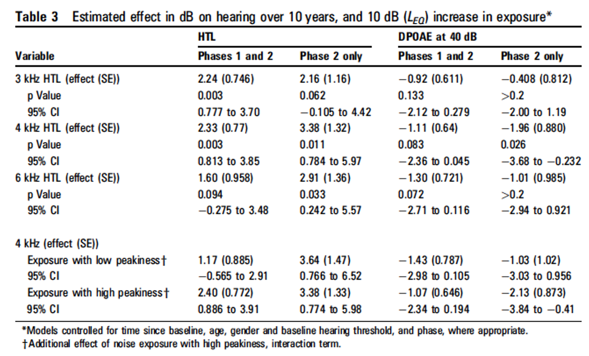
Seixas, Neitzel, Stover, Sheppard, Feeney, Mills, Kujawa, 2012
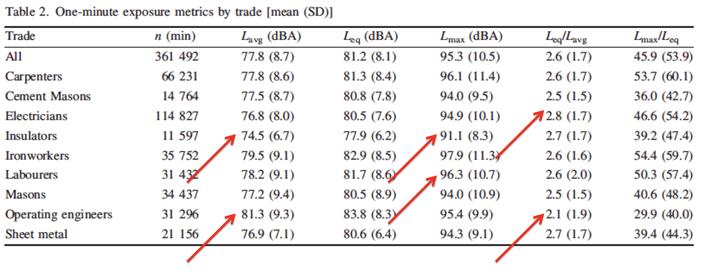
Seixas, Neitzel, Sheppard, Goldman, 2004
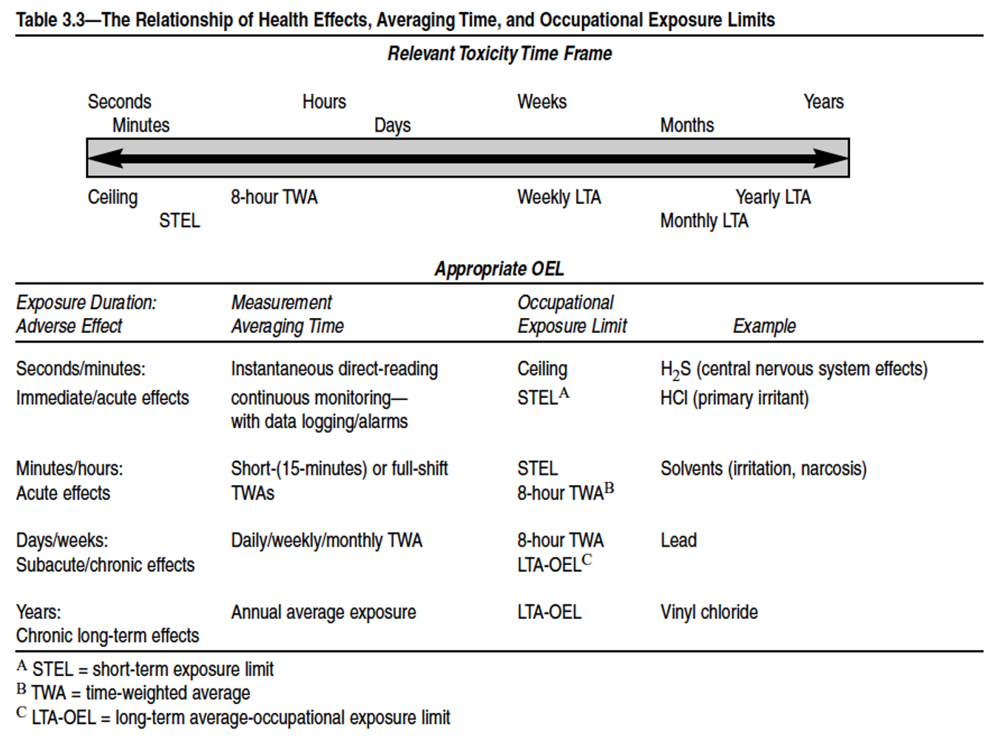
AIHA, Strategy for Assessing and Managing Occupational Exposures, 3rd ed, 2006
Example of how to treat missing data
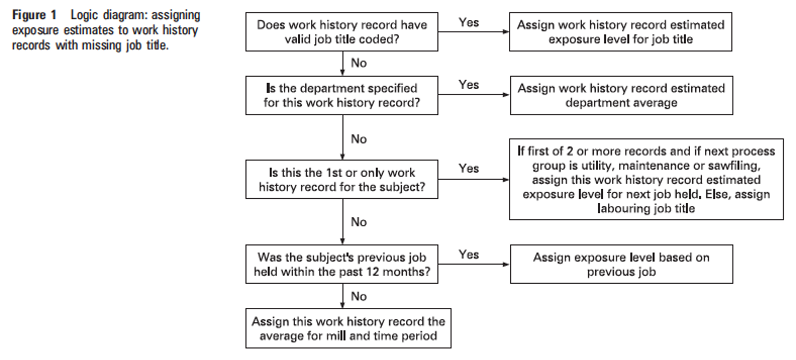
Davies, Teschke, Kennedy, Hodgson, Demers, 2008
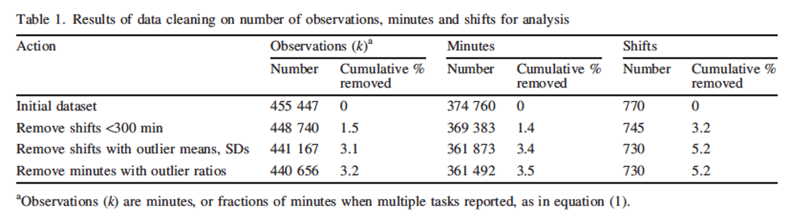
Seias, Neitzel, Sheppard, Goldman, 2004
What exposure metrics can we look at in our data?
Average and TWA
How to compute TWA?
By individual? By group?
Maximum
Peakiness metric?
How to compute peakiness?
Maximum / average?
\(\text{TWA}=L_{EQ}+\text{log10(Runtime/480)}\)
\(\text{Peakiness}=L_{MAX}/L_{EQ}\)
# A tibble: 201 × 4
work_leq_d_ba measured_shift_length_mins TWA peakiness
<dbl> <dbl> <dbl> <dbl>
1 91.1 480 91.1 1.22
2 91.4 478 91.4 1.21
3 92.3 520 92.6 1.32
4 92 522 92.4 1.33
5 94.8 540 95.3 1.17
6 94.3 538 94.8 1.18
7 90.8 504 91.0 1.30
8 91.1 502 91.3 1.31
9 84.9 410 84.2 1.38
10 85.4 412 84.7 1.37
# ℹ 191 more rows